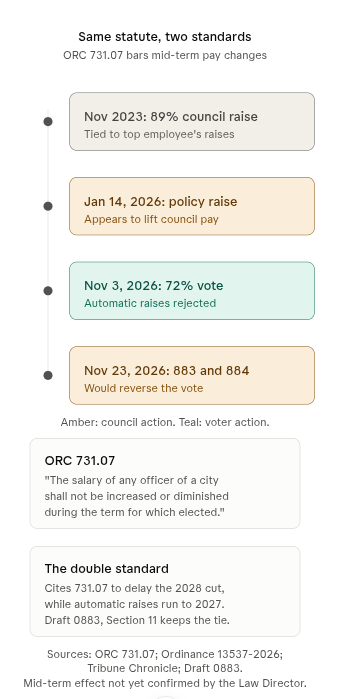

Council Action: Ordinances 883 and 884
Last updated: November 23, 2026. This page summarizes public documents and news reports. It is not legal advice.
What is on the agenda
Two drafts are on the agenda. Both request emergency status, which would take effect immediately without the normal waiting period.
- Draft 0883. Sets council pay at $16,500 for the term beginning January 1, 2028, and sets pay for other top officials for 2028 and 2030. Keeps the 2023 pay ordinance in effect through December 31, 2027 (and through 2029 for the treasurer). Removes the requirement that future raises be approved by voters. Declares an emergency.
- Draft 0884. Repeals the voter-approved ballot ordinance outright. Declares an emergency.
Voters approved the citizens initiative on November 3, 2026, with about 72% in favor. It rejected automatic pay increases for council and nine top city officials.
Timeline
- November 2023: Council voted 8–2 to raise council pay 89% and tie council and nine top officials to the highest-paid city employee's pay increases.
- January 14, 2026: Council passed Ordinance 13537-2026, setting pay policy for non-bargaining employees, with a 3.5% increase and an emergency clause. The ordinance does not name the highest-paid employee.
- November 3, 2026: Voters approved the citizens initiative rejecting automatic raises.
- November 19, 2026: The Board of Elections certified the initiative.
- November 23, 2026: Council takes up Ordinances 883 and 884.

What the law says
- ORC 731.07 says the salary of any officer of a city "shall not be increased or diminished during the term for which he was elected or appointed." It applies to increases and decreases.
- Attorney General opinion (1979) read the statute to bar increases that take effect during an officer's term in a non-charter city.
- ORC 731.30 requires two-thirds of members elected to pass an emergency measure, and the reasons must be stated in the ordinance. Emergency measures are excluded from referendum petitions, but only if they meet that test. This measure was a citizens initiative, not a referendum.
- Ohio Supreme Court, 2019 (Hasselbach): The court ordered a referendum petition onto the ballot after finding that a council's emergency reasons were inadequate.
- Ohio Ethics Commission Opinion 91-007: Council members may not enact an in-term increase for current council members under ORC 102.03(D).
The council's position
Council members have argued that Ohio law bars changing elected officials' pay mid-term, and that the initiative's voter-approval rule conflicts with state law and the non-charter form of government. Councilwoman Tina Milner has said she will vote against the measures and disputes the state-law argument. The Law Department drafted the ordinances.
Open questions
These are questions the public can ask council and the Law Director. They are not conclusions.
- Did the January 2026 policy increase reach council and the nine top officials mid-term through the 2023 pay tie?
- If ORC 731.07 bars in-term changes, why would Draft 0883 keep automatic increases running through 2027?
- Are the reasons in the emergency clause specific and immediate, given that the pay changes take effect in 2028 and 2030?
- Draft 0883 sets council pay at $16,500 but names the council president only for benefits. Is the president's 2028 pay set?
What you can do
- Attend: Caucus is at 4:15 p.m. and the regular meeting at 5 p.m. on Monday, November 23, at 141 South Street SE, Warren.
- Watch: Agendas and meeting videos are posted at cityofwarren.org.
- Ask: Contact council members and the Law Director with the questions above.
- Public comment: Check the council's public comment rules and sign-up process before the meeting.
Find your council member and contact all of Warren’s elected officials
Tell Warren City Council: Respect the People’s Vote
- Council President John Brown — 330-399-6657
- Larry Larson, Ward 1 — 330-540-1633
- Tina Milner, Ward 2 — 330-978-4886
- Greg Greathouse, Ward 3 — 330-272-6671
- James Shaffer, Ward 4 — 330-883-1844
- Michael Shrodek, Ward 5 — 330-647-5851
- Honeya Price, Ward 6 — 330-937-0456
- Ronald White Sr., Ward 7 — 234-600-4433
- Helen Rucker, At Large — 330-646-3883
- Michael O’Brien, At Large — 330-727-1097
- Greg Thumm, At Large — 234-283-2537
- City Council Office — 330-841-2549
Call respectfully and ask each official one simple question:
Will you respect Warren’s Declaration of Accountability—the people’s vote—or protect the politicians’ pay-raise system?
Public contact information verified through the official Warren City Council directory.
Vote results: Placeholder. Add the official roll-call results from the Clerk of Council after the meeting.
Sources
News
- Tribune Chronicle: Council eyes axing pay-raise repeal (Nov. 2026)
- Tribune Chronicle: Who are Warren City Council members actually representing? (Nov. 2026)
- Tribune Chronicle: Voters will decide whether to stop automatic raises (Oct. 2026)
- Tribune Chronicle: Warren council approves pay raises (Nov. 2023)
- WFMJ: Warren City Council plans to strike down referendum denying raises
- WKBN: Warren voters to decide whether to repeal council pay raises
Law
- ORC 731.07: Salaries shall not be changed during term
- ORC 731.30: Application of sections
- Attorney General opinion 1979-114
- State ex rel. Hasselbach v. Sandusky County Board of Elections, 2019-Ohio-3751
- Ohio Ethics Commission Opinion 91-007
Primary documents (PDF downloads)